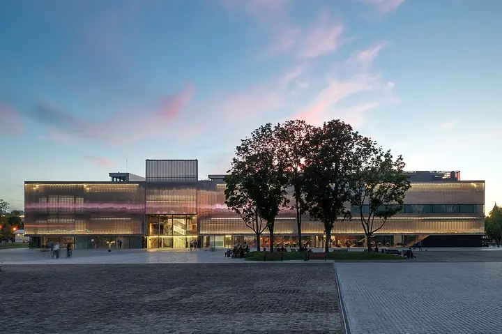

Подборку собрали 20 октября, прошедшие события скрыты. Свежая афиша — на главной

Фото: Garage Museum of Contemporary Art, CC BY-SA 4.0 · Wikimedia Commons
Музей современного искусства · ЦАО
Музей «Гараж»
Главный музей современного искусства — прямо в Парке Горького, с книжным и кафе.
- ₽ · до 1 500 ₽ на человека
- в 2 планах
- 3 события в афише
Позвать сюда: Музей «Гараж»Открыть в каталоге: Музей «Гараж»Маршрут до места: Музей «Гараж»
Адрес и детали
- Адрес
- ул. Крымский Вал, 9, стр. 32
Открыть на Яндекс Картах (в новой вкладке) - Метро
- м. Парк культуры
- Округ
- Центр (ЦАО)
- Цена
- до 1 500 ₽ на человека
- Часы работы
- пн–вс 11:00–22:00 · проверили в октябре 2026
- Телефон
- +7 (495) 645-05-20
Планы с этим местом 2
- Музей «Гараж» · Музей современного искусства · м. Парк культуры
- 25 минут пешкомНескучный сад · Парк
Современное искусство, а потом долгая прогулка вдоль реки в самую тихую часть Парка Горького.
Открыть план: Гараж и Нескучный садПозвать сюда: Гараж и Нескучный сад
Фото: Garage Museum of Contemporary Art, CC BY-SA 4.0 · Wikimedia Commons
- Музей «Гараж» · Музей современного искусства · м. Парк культуры
- 25 минут пешкомНескучный сад · Парк
Современное искусство и книжный в «Гараже», а потом минут 25 пешком через Парк Горького в Нескучный сад — старые деревья, овраги и набережная без толпы.
Открыть план: Гараж и Нескучный садПозвать сюда: Гараж и Нескучный сад
Фото: Garage Museum of Contemporary Art, CC BY-SA 4.0 · Wikimedia Commons

Афиша площадки 3
Музей «Гараж», −1 этаж · м. Октябрьская · бесплатно · 12+
Инсталляция-диалог: две лампы общаются вспышками и звуком, а розовая зеркальная комната множит тебя до бесконечности. Вход бесплатный, фото выходят эффектные.
Подробнее: Вадим Фишкин «Словарь воображаемых мест»Позвать сюда: Вадим Фишкин «Словарь воображаемых мест»Билеты : Вадим Фишкин «Словарь воображаемых мест» (страница с билетами, откроется в новой вкладке)
Фото: Garage Museum of Contemporary Art, CC BY-SA 4.0 · Wikimedia Commons
Музей «Гараж», мезонин · м. Октябрьская · бесплатно · 12+
Можно поиграть в искусство: две 8-битные игры-инсталляции индийской художницы по мотивам советских детских книг. Бесплатно, а рядом Парк Горького.
Подробнее: Видеоигры Афры ШафикПозвать сюда: Видеоигры Афры ШафикБилеты : Видеоигры Афры Шафик (страница с билетами, откроется в новой вкладке)
Фото: Garage Museum of Contemporary Art, CC BY-SA 4.0 · Wikimedia Commons
Музей «Гараж», открытое хранение · м. Октябрьская · 12+
Позднесоветские «долгие 80-е»: искусство вместе с телевизором, кино и рок-клубами той поры. Ностальгия для компании; учти, что в залах бывает мигающий свет.
Подробнее: Искусство на частоте 1980-хПозвать сюда: Искусство на частоте 1980-хБилеты : Искусство на частоте 1980-х (страница с билетами, откроется в новой вкладке)
Фото: Garage Museum of Contemporary Art, CC BY-SA 4.0 · Wikimedia Commons
Похожие рядом


Что ещё рядом


Как позвать
- Выбери план, место или событие — в карточке адрес, цены и маршрут в Яндекс Картах.
- Нажми «Позвать сюда» — соберётся приглашение-игра для свидания или голосование для компании.
- Отправь ссылку в любой мессенджер: тебе ответят, а компания отметит, куда и когда может. Бесплатно и без регистрации.